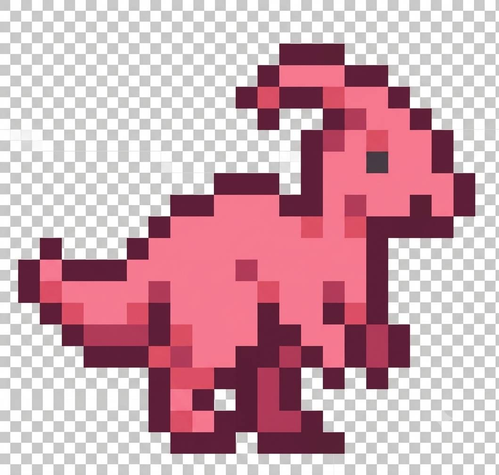
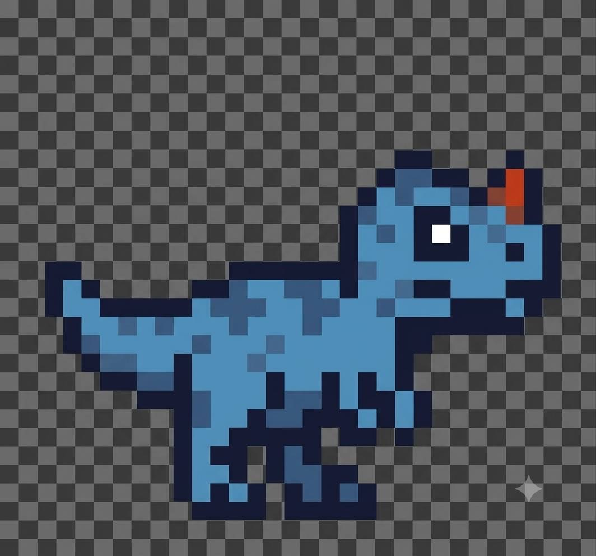
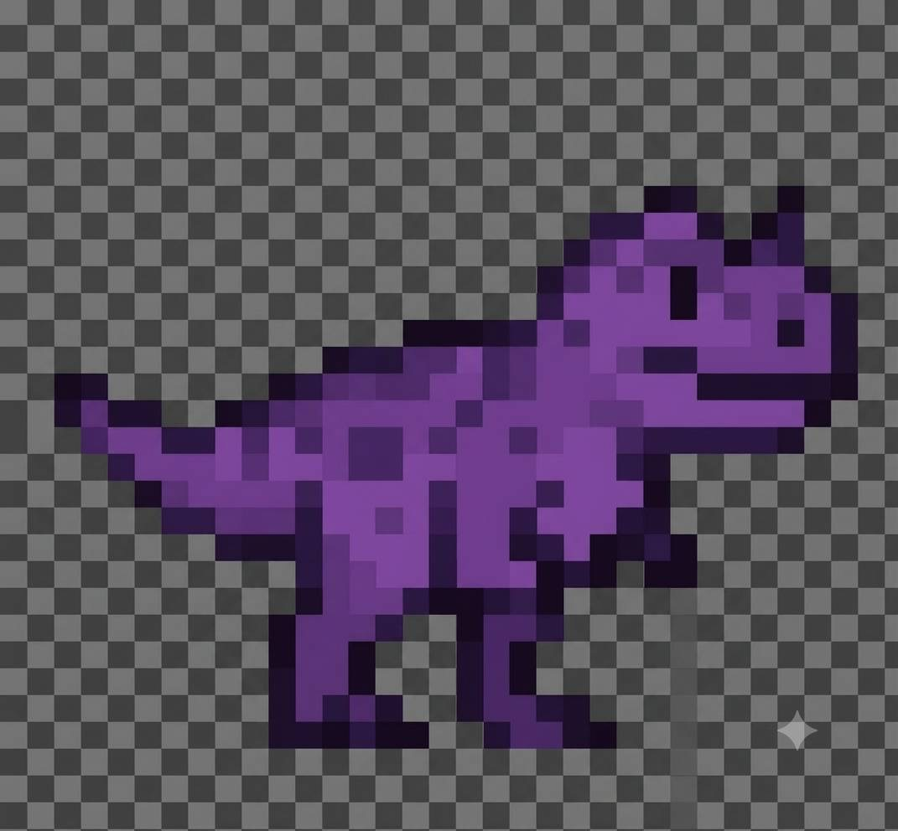
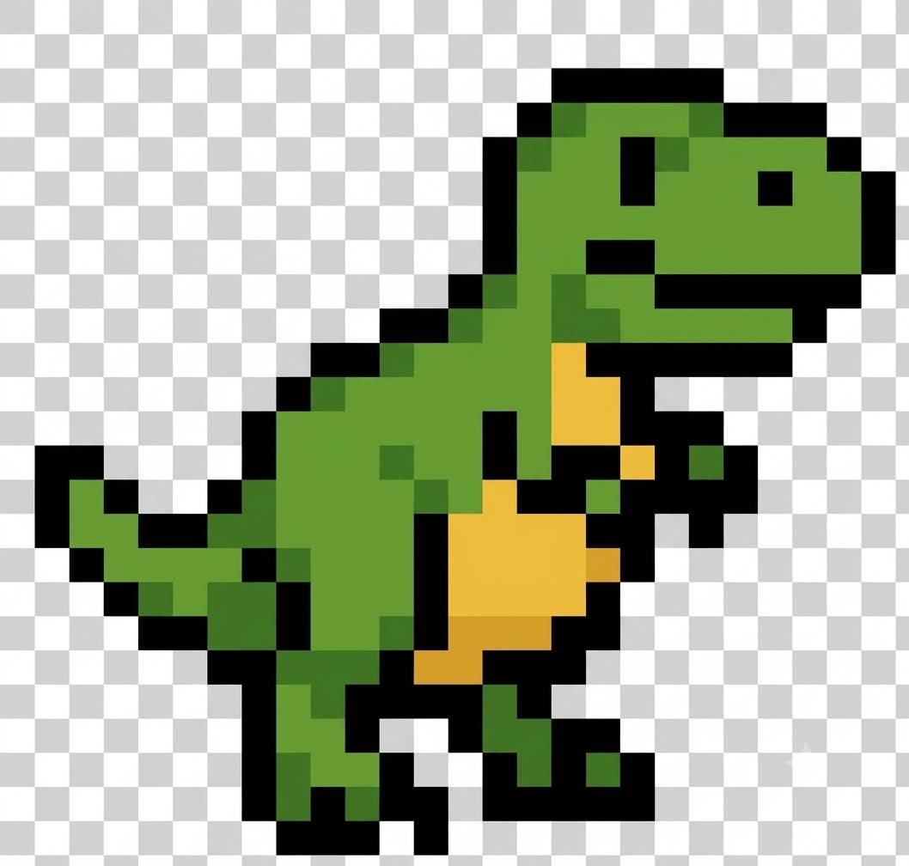
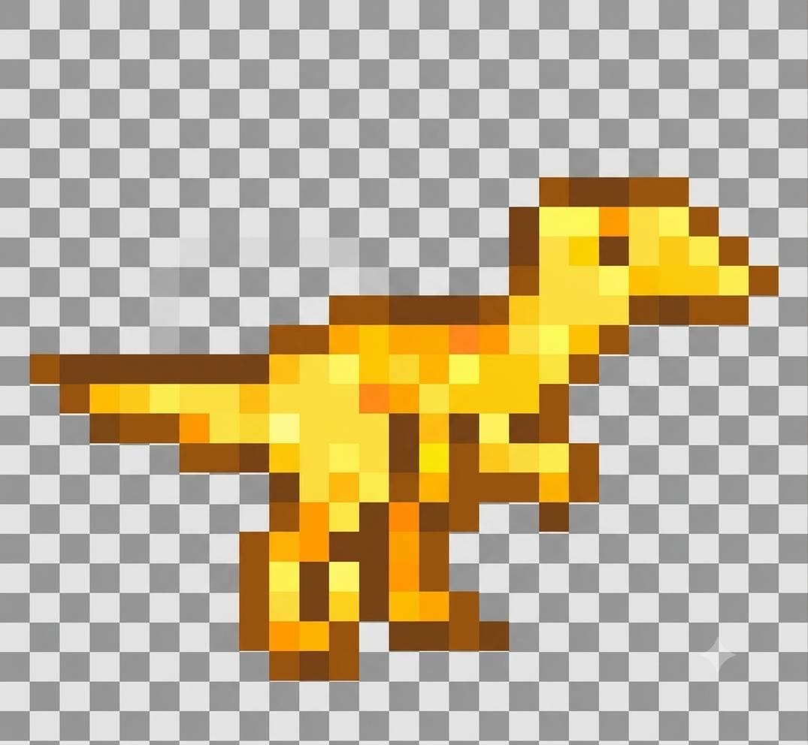

噴火小恐龍大冒險
【操控玩法】
•
向右箭頭 (➔)
：小恐龍向右奔跑加速
•
向上箭頭 (▲)
：小恐龍跳躍
•
空白鍵 (Space)
：從小恐龍嘴巴噴火攻擊仙人掌
【計分與仙人掌規則】
• 🌵
小仙人掌
：按
1下
空白鍵燒掉。燒掉或跳過皆得
10分
。
• 🌵🌵
中仙人掌
：需按
2下
空白鍵燒掉。燒掉得
20分
（太高無法跳過）。
• 🌵🌵🌵
大仙人掌
：需按
3下
空白鍵燒掉。燒掉得
30分
（太高無法跳過）。
• 💥
注意
：撞到任何未被燒掉的仙人掌，遊戲即結束！
請選擇你的小恐龍：

粉小恐龍

藍小恐龍

紫小恐龍

綠小恐龍

黃小恐龍
選擇完畢後，請按【 Enter 鍵 】進入遊戲！